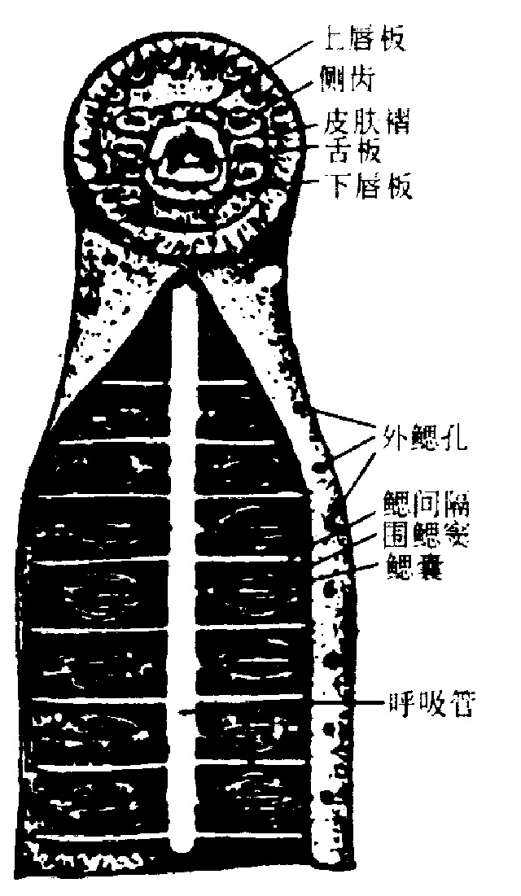

一、圆口纲的主要特征
圆口纲（Cyclostomata）是现存最原始的脊椎动物，又称无颌类（Agnatha）。它们保留了大量原始特征，是连接原索动物与有颌脊椎动物的关键类群。
圆口纲名称由来：口呈圆形，无上下颌，不能启闭，常呈吸盘状或漏斗状，故称"圆口"。
本纲主要包括七鳃鳗和盲鳗两类（详见下一节），均为水生、外形似鳗的寄生或半寄生动物。
（一）原始性特征（与原索动物相近）
圆口纲保留了一系列原索动物的原始特征，体现其过渡地位：
- 无上下颌：口为圆形吸盘或漏斗，不能主动咬合，故称无颌类。
- 无成对附肢：没有偶鳍（无胸鳍、腹鳍），仅有奇鳍（背鳍、尾鳍）。
- 脊索终生存在：脊索不被脊柱完全取代，仅出现雏形椎骨（软骨椎弓），无完整脊椎骨。
- 软骨脑颅：头骨主要为软骨，无硬骨；脑颅不完整。
- 无胃：消化道分化简单，无胃的分化，食道直接通肠。
- 生殖：雌雄异体（少数雌雄同体），无生殖导管，生殖细胞破壁入体腔经生殖孔排出。
（二）特化特征（适应寄生/半寄生生活）
圆口纲在原始特征之外，还发展出一系列适应寄生、半寄生生活的特化结构：
- 皮肤裸露无鳞：皮肤光滑，富黏液腺（盲鳗黏液腺尤为发达）。
- 单鼻孔（monorhiny）：鼻孔单一，位于头部背面中央（七鳃鳗）或前端（盲鳗），通鼻囊，为退化的嗅器官。
- 口呈吸盘式或漏斗状：具角质齿（外胚层表皮形成），用以吸附和刮食寄主组织。
- 鳃囊（gill pouch）：呼吸器官特化为鳃囊，鳃丝内生于囊壁——这是圆口纲区别于鱼类的关键特征（详见下文）。
- 具特殊的口腔腺：分泌物可使寄主血液不凝固，便于寄生吸血。
- 内耳仅具1～2个半规管（七鳃鳗2个、盲鳗1个），少于其他脊椎动物的3个。

（三）鳃囊——圆口纲的核心鉴别特征（必考）
圆口纲的呼吸器官为鳃囊（gill pouch），鳃丝在囊壁内侧生长，形成内鳃，与鱼类鳃丝外伸于鳃间隔两侧的外鳃截然不同。
鳃囊结构要点：
- 由咽部两侧向外膨大形成的囊状结构；
- 鳃丝着生于鳃囊内壁（向内生长），故称内鳃；
- 每个鳃囊通过内鳃孔与咽相通，通过外鳃孔与外界相通；
- 水流路径：水 → 口/鼻孔 → 咽 → 内鳃孔 → 鳃囊（气体交换）→ 外鳃孔 → 体外。
与鱼类的区别：
- 圆口纲：鳃丝内生于鳃囊壁，呼吸水流经"鳃囊"完成；
- 鱼类：鳃丝外伸于鳃弓的鳃间隔两侧，呼吸水流经"鳃弓"完成。
（四）单鼻孔与嗅器官
圆口纲具单一鼻孔（单鼻孔 monorhiny），是脊椎动物中独特的特征。
- 七鳃鳗：单鼻孔位于头背正中，鼻孔内通鼻囊，鼻囊再以鼻咽管通咽部，故呼吸时可经鼻孔进水。
- 盲鳗：单鼻孔位于头前端，鼻孔通鼻囊，鼻囊再通咽，便于钻入寄主体内时呼吸。
单鼻孔被认为是原始特征（脊椎动物祖先可能为单鼻孔），有颌类以后才分化为成对鼻孔。
（五）其他主要系统特征
3-1. 循环系统
心脏为一心房、一心室，具静脉窦和动脉圆锥，执行单循环。心室内血液虽为混合血，但含氧血与缺氧血略有分层，效率较鱼类低。
血液呈红色，含血红蛋白，红细胞有核，白细胞类型较原始。无真正的淋巴管，淋巴液直接进入静脉。
3-2. 排泄系统
成体具中肾，位于体腔背侧；输尿管为中肾管，雄性兼输精功能。无膀胱，代谢废物以氨为主，随尿液排入泄殖腔。
排泄方式与其水生生活相适应，肾脏结构和机能均较原始。
4. 神经系统与感觉器官
神经系统：脑已分化为端脑、间脑、中脑、小脑、延脑五部，但分化程度低，端脑不发达，小脑不发达或缺失。脑神经10对。
感觉器官：内耳结构简单，无耳柱骨，平衡感觉主要由半规管和前庭完成；半规管仅2个（七鳃鳗）或1个（盲鳗），为脊椎动物中最少者。嗅觉发达，视觉不发达（盲鳗眼退化隐藏皮下）。
骨骼系统：主要为软骨，脊索终生存在，椎骨仅有雏形（软骨椎弓），无完整脊椎骨；具软骨脑颅和咽颅。
生殖与发育：雌雄异体（七鳃鳗）或雌雄同体（盲鳗部分种类），无生殖导管。七鳃鳗多数种类成体海栖，营半寄生生活，繁殖期溯河洄游至淡水，产卵后死亡；幼体为沙隐幼虫（ammocoete），经变态发育为成体。盲鳗全海栖，营腐食或寄生生活，无变态。
| 特征 | 圆口纲（无颌类） | 鱼纲（有颌类） |
|---|---|---|
| 颌 | 无上下颌 | 具上下颌 |
| 成对附肢 | 无（仅奇鳍） | 有偶鳍（成对） |
| 脊索/脊柱 | 脊索终生存在，仅雏形椎骨 | 脊柱取代脊索 |
| 口 | 圆形吸盘/漏斗，角质齿 | 有颌口，真牙 |
| 鼻孔 | 单鼻孔 | 成对鼻孔 |
| 呼吸器官 | 鳃囊（鳃丝内生，内鳃） | 鳃（鳃丝外伸，外鳃） |
| 脑颅 | 软骨，不完整 | 完整（软骨鱼软骨/硬骨鱼硬骨） |
| 胃 | 无胃分化 | 有胃 |
| 内耳半规管 | 1～2个 | 3个 |
| 进化地位 | 最原始脊椎动物 | 较高等脊椎动物 |
（六）圆口纲的进化地位
圆口纲是现存最原始的脊椎动物，处于原索动物向有颌脊椎动物过渡的地位。
其原始特征（无颌、无成对附肢、脊索存在、软骨脑颅、单鼻孔）接近脊椎动物祖先；其特化特征（吸盘口、鳃囊、口腔腺、角质齿）则是对寄生生活的适应。
圆口纲并非有颌类的直接祖先，而是与有颌类来自共同祖先（原始有头类）的旁支——有颌类由古代有颌甲胄鱼类演化而来，圆口纲则是无颌类中存续至今的代表。
本节小结
1. 圆口纲 = 无颌类 = 现存最原始的脊椎动物；口呈圆形、无上下颌，故名"圆口"。
2. 原始特征：无颌、无成对附肢、脊索终生存在（仅雏形椎骨）、软骨脑颅、无胃、单鼻孔。
3. 特化特征：皮肤裸露富黏液、口吸盘/漏斗+角质齿、鳃囊、口腔腺（抗凝血）、内耳半规管1～2个。
4. 鳃囊是核心鉴别特征：鳃丝内生（内鳃），区别于鱼类鳃丝外伸（外鳃）。
5. 循环：一心房一心室，单循环；排泄：成体中肾（盲鳗为无肾小球的中肾，aglomerular mesonephros）；神经：脑五部但分化低，小脑不发达。
6. 七鳃鳗有变态（沙隐幼虫，形似文昌鱼）；盲鳗无变态。
7. 进化地位：最原始脊椎动物，无颌类的现存代表（旁支），非有颌类直接祖先。